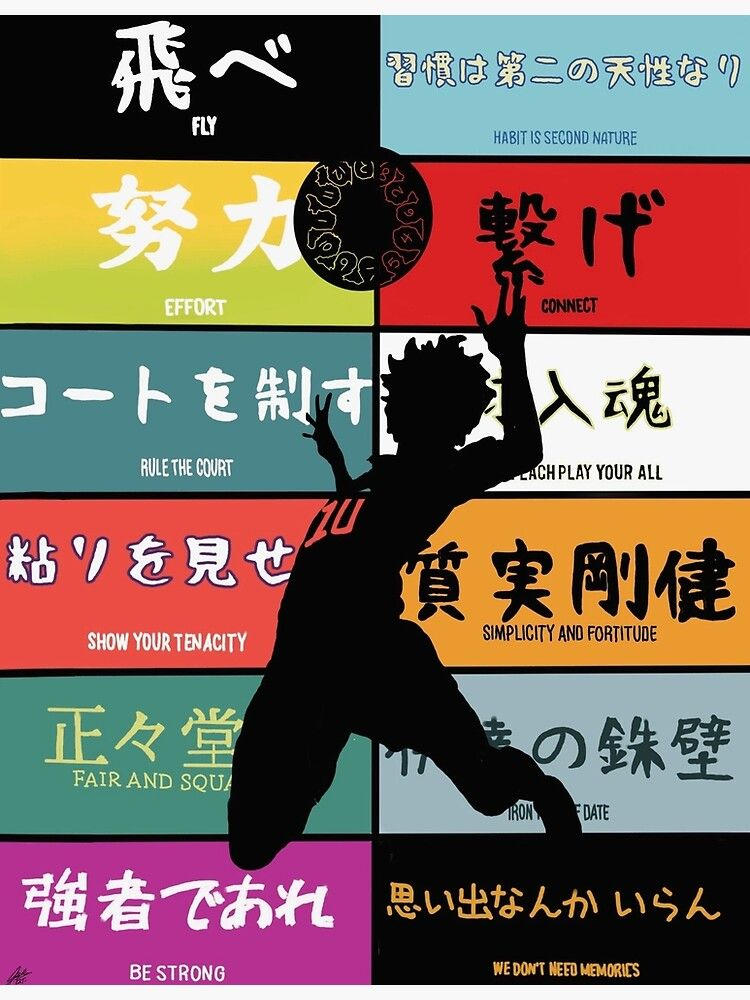
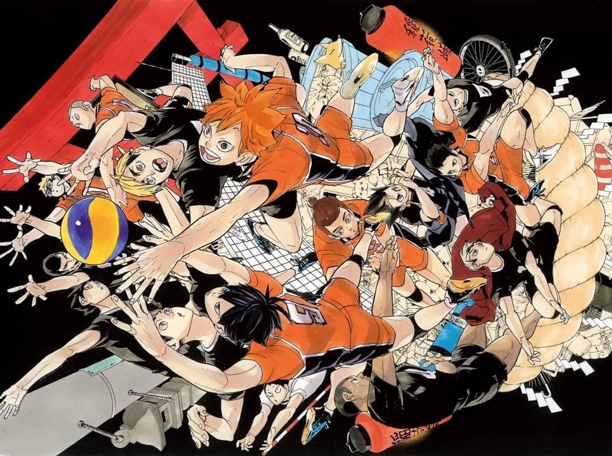
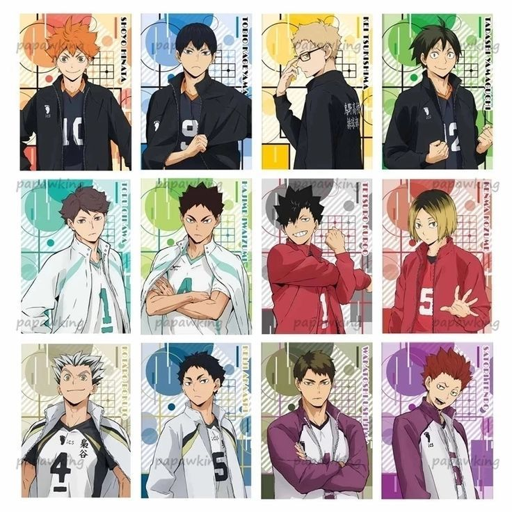
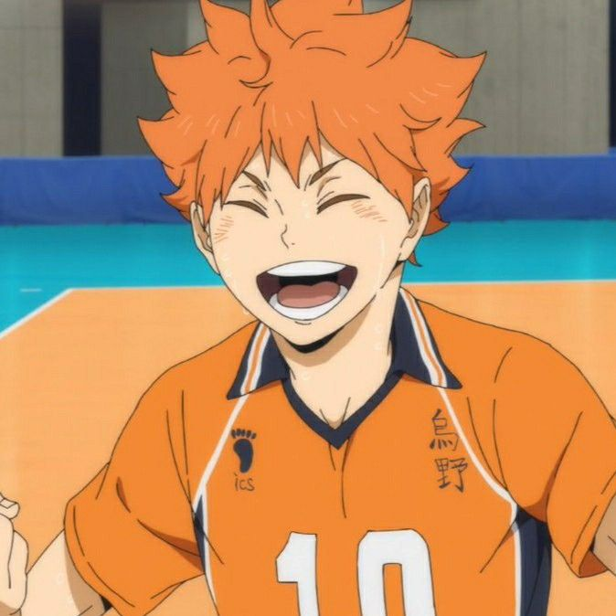
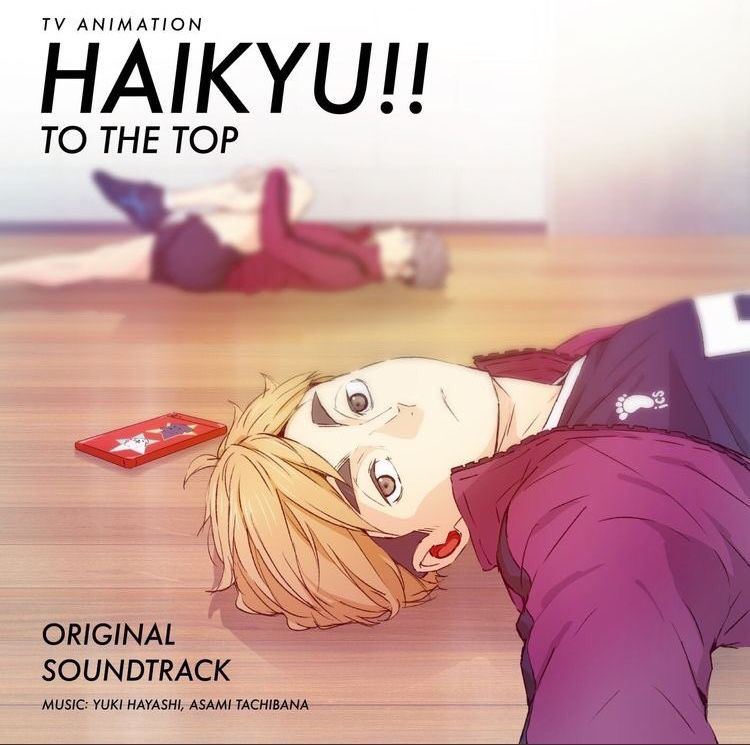
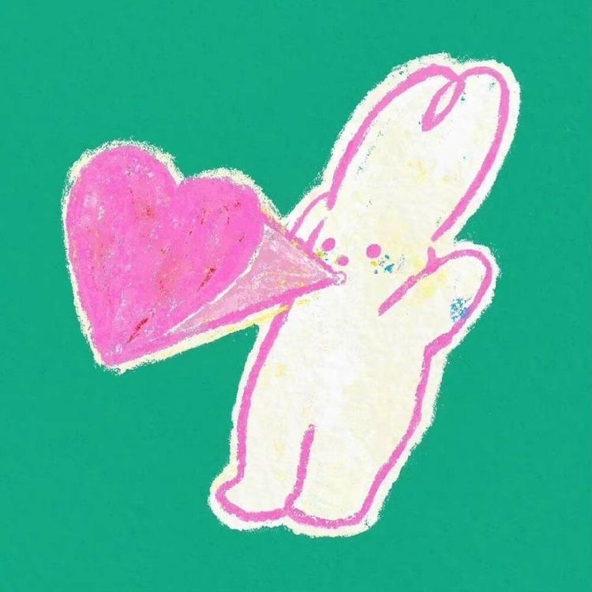

Historia ✧･ﾟ: *✧･ﾟ:*
Es todo lo que abría esperar de un anime deportivo, y más. Narra la historia de una escuela que una vez tuvo éxito, pero que está en declive. Ahora, el equipo de voleibol tiene que resurgir de su tumba. Pero, para mí, lo que hace que la historia de Haikyuu! destaque es cómo te absorbe el desarrollo de cada personaje; realmente sientes algo por ellos. Además, hay giros y sorpresas que te mantienen alerta.
Arte ✧･ﾟ: *✧･ﾟ:*
Impresionante. Los personajes están muy bien dibujados, las expresiones faciales son perfectas y la animación del juego está perfectamente coreografiada. Cada personaje tiene su propia característica especial, así que no hay confusión al momento de distinguir quién es quién. El único problema que he notado es que se han reutilizado algunos planos.
Personajes ✧･ﾟ: *✧･ﾟ:*
Desde el primer episodio, puedes sentir la cantidad de personalidad que hay en este anime. Uno esperaría que todos los personajes tuvieran los típicos estereotipos, pero no. Cada personaje tiene su propia personalidad. Y aunque todos están en el mismo viaje hacia la grandeza, cada personaje tiene su propia historia que les ha convertido en lo que son. Sientes verdadera compasión por ellos y te sumerges en ellos en cuanto empiezas a verlos.
Emocion ✧･ﾟ: *✧･ﾟ:*
Sinceramente, no esperaba mucho de Haikyuu, porque creía que iba a ser un anime de deportes más, pero me equivoqué. Haikyuu! es una montaña rusa de emociones que te hará reír, llorar y animarte durante todo el viaje, hasta el punto de querer practicar voleyball al igual que los personajes por todo el amor que te comparten hacia el deporte.
Sonido ✧･ﾟ: *✧･ﾟ:*
Estoy absolutamente enamorada del sonido de Haikyuu! Los actores de doblaje hicieron un trabajo increíble retratando realmente la personalidad de cada personaje. Los OP y los ED encajan muy bien con el anime y son muy divertidos. La banda sonora, la banda sonora... complementa y realza todas las escenas a la perfección.
General ✧･ﾟ: *✧･ﾟ:*
Una verdadera obra maestra... Recomendaría Haikyuu a todo el mundo, pero especialmente a los aficionados al anime deportivo o a los que quieran probarlo.